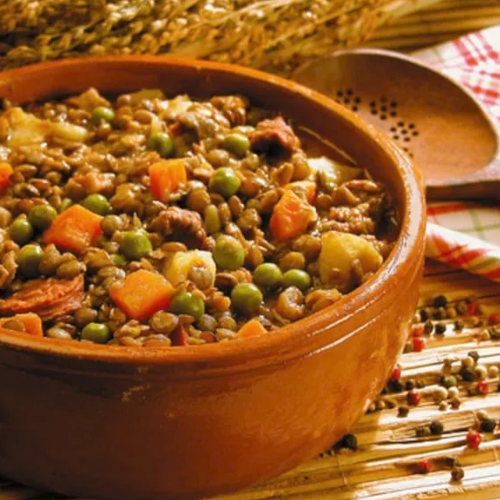
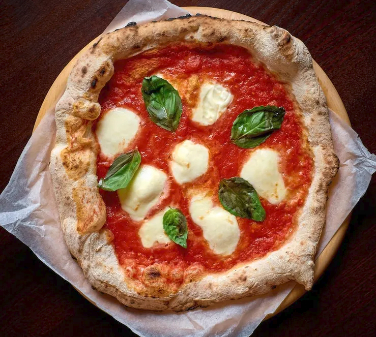
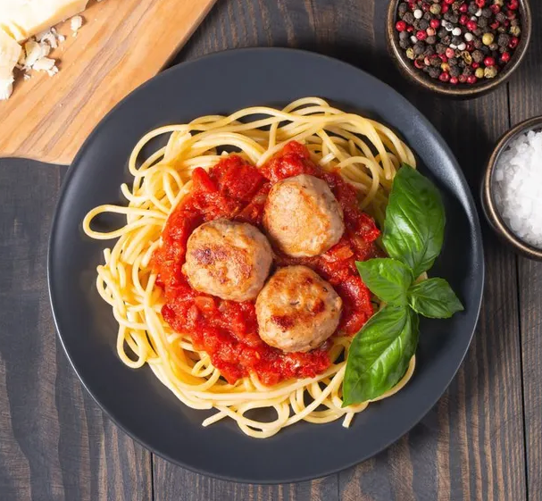
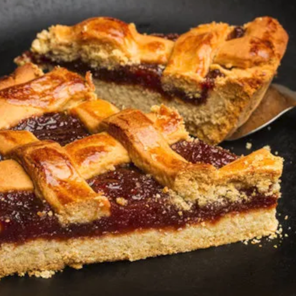
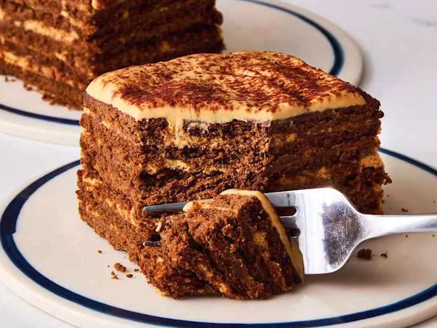

Guiso de Lentejas

Ingredientes:
- 2 tazas de lentejas, previamente remojadas durante al menos 4 horas.
- 1 chorizo colorado, cortado en rodajas.
- 150 gr de panceta, cortada en cubos.
- 1 cebolla grande, picada.
- 2 dientes de ajo, picados.
- 1 pimiento rojo, cortado en cubos.
- 1 lata de tomate triturado (400 gr).
- 1 litro de caldo de verduras o carne.
- 2 hojas de laurel.
- Sal y pimienta al gusto.
- Aceite de oliva.
Preparación:
En una olla grande, calienta un poco de aceite de oliva y añade la cebolla, el ajo y el pimiento.
Cocina hasta que la cebolla esté transparente.
Agrega el chorizo y la panceta, y cocina durante unos minutos hasta que estén dorados.
Incorpora las lentejas escurridas y revuelve bien para combinar todos los ingredientes.
Vierte el tomate triturado y el caldo. Añade las hojas de laurel y sazona con sal y pimienta.
Lleva la mezcla a ebullición, luego reduce el fuego y deja cocer a fuego lento, tapado, durante aproximadamente 1 hora y 30 minutos o hasta que las lentejas estén tiernas.
Rectifica la sazón y sirve caliente.
Pizza Margarita

Ingredientes:
- Agua 120cc
- Albahaca fresca 5grs.
- Harina 0000 200grs.
- Ajo 2 dientes
- Sal 5grs.
- Levadura 5grs.
- Tomates frescos 150grs.
- Aceitunas verdes 30grs.
- Mozzarella reducida en grasa 200grs.
Preparación:
Coloque la harina en un bowl, agregue levadura y mezcle, luego incorpore agua y sal, mezcle hasta formar la masa.
Retire la masa del bowl y amase sobre la mesada enharinada hasta formar un bollo.
Envuelva el bollo en papel film y deje levar durante 1 hora, transcurrido el tiempo de reposo amase nuevamente con las manos dando forma circular, luego coloque sobre una placa y deje levar nuevamente.
Cocine en horno precalentado a 180°C durante 10 minutos.
Corte el diente de ajo en brunoise.
Corte la albahaca en chiffonade.
Armado:
Cubra la masa con mozzarella, luego rodajas de tomate y ajo picado, termine la cocción en horno a 180°C durante 15 minutos.
Al momento de servir incorpore la albahaca y las aceitunas.
Presentación:
Corte en porciones.
Albondigas con espaguetis

Ingredientes:
- 320 gramos de espaguetis (80 gramos por persona)
- 400 gramos de salsa de tomate
- 4 litros de agua (para cocer la pasta)
- 1 hoja de laurel
- 400 gramos de carne picada (mitad cerdo y mitad vacuno)
- 2 yemas de huevo
- 4 cucharadas de pan rallado
- 1 cucharada de perejil picado
- pimienta negra molida
- orégano seco
- sal fina
- aceite para freír (de girasol o de oliva)
- Opcional: un poco de queso parmesano
Preparación:
Primero vamos a preparar las albóndigas. Pon en un cuenco (o un bol) grande la carne picada y añade encima las yemas de huevo (las claras guárdalas para otra receta), el perejil picado, 1 cucharada rasa de sal fina y una pizca de pimienta negra molida. Con un tenedor ve aplastando la carne mientras los demás ingredientes se mezclan con ella. Sigue así hasta que se forme una mezcla homogénea.
Ahora añadimos el pan rallado y volvemos a mezclar apretando bien con el tenedor hasta que se mezcle bien. Ya tenemos la masa para las albóndigas.
Pon a calentar el aceite.
Puedes usar mucho para que las albóndigas queden cubiertas y se hagan de un tirón o menos cantidad de aceite y vas dándole las vueltas a las albóndigas para que se hagan por todos lados.
Coge una porción pequeña de masa y haz una albóndiga girando la masa entre las palmas de tu mano.
Si te humedeces ligeramente (muy muy poco) las manos, la carne no de pegará y te costará menos trabajo. Haz las albóndigas del tamaño que más te guste, a mi me gustan pequeñas (de unos 3 cm de diámetro) así salen más albóndigas y se pueden comer de un bocado.
Cuando el aceite esté caliente y tengas las albóndigas preparadas empieza a freírlas por tandas. No amontones demasiadas albóndigas en la sartén, así el aceite no se enfriará y las albóndigas se dorarán bien. Si son pequeñas con 1 minuto será suficiente y si son más grandes déjalas hasta que estén bien doradas.
Luego sácalas y deja escurrir el exceso de aceite sobre papel absorbente (papel de cocina).
Ahora pon la salsa de tomate a calentar en una cacerola grande (para que después quepan los espaguetis) e incorpora las albóndigas (para que suelten su sabor en la salsa) y una pizca de orégano seco. Deja que se caliente a fuego medio-bajo mientras preparas la pasta.
Pon el agua a hervir para cocer la pasta. Cuando esté hirviendo añade tres cucharadas pequeñas de sal, una hoja de laurel y los espaguetis. Deja hervir hasta que la pasta esté en su punto (depende de la calidad y del tipo de pasta, lee el envoltorio y ve probando).
Cuando los espaguetis estén en su punto sácalos del agua y añádelos a la cacerola donde están la salsa de tomate y las albóndigas y mezcla bien. Si ves que la salsa está muy espesa añade un poco del agua en el que has cocido los espaguetis.
Sirve la pasta colocando algunas de las albóndigas por arriba y si te apetece añade un poco de parmesano rallado.
Fuera de la cocina y a comer!!!!
Pastafrola

Ingredientes:
- 200 g de harina leudante (o 200 g harina común + 1 cdita. polvo de hornear)
- 100 g de manteca o margarina (a temperatura ambiente)
- 100 g de azúcar
- 1 huevo + 1 yema
- 1 cdta. de esencia de vainilla
- Ralladura de 1/2 limón
- 1 pizca de sal
- 300-400 g de dulce de membrillo
- 2-3 cdas. de agua caliente u oporto
Para el relleno:
Preparación:
Masa: Bate la manteca con el azúcar hasta formar una crema. Agrega el huevo, la yema, la vainilla y la ralladura de limón. Incorpora la harina tamizada con la sal y mezcla solo hasta integrar (no amases en exceso). Forma un disco, envuélvelo en film y refrigera por 30-60 minutos.
Relleno: Calienta el dulce de membrillo con un poco de agua u oporto hasta que se ablande y pueda reducirse a una pasta lisa. Deja enfriar.
Armado: Estira 3/4 de la masa para forrar un molde de tarta desmontable. Extiende el dulce de membrillo sobre la base.
Enrejado: Estira la masa restante y corta tiras de 1-1,5 cm de ancho. Colócalas sobre el relleno formando una rejilla cruzada.
Cocción: Pincela las tiras con huevo batido y hornea a 180°C durante 30-40 minutos hasta que la masa esté dorada. Deja enfriar completamente antes de desmoldar.
Chocotorta

Ingredientes:
- 400 gr de dulce de leche (si es repostero mucho mejor, sino no importa!)
- 400 gr de crema de leche o natilla
- 750 gr de galletitas de chocolate
- Leche o café para remojar las galletitas
- 50 gr de chocolate (cobertura o de taza) semi amargo
- 50 gr de cacao en polvo
Preparación:
Comenzar a batir el dulce de leche y cuando esté de un color más claro agregar la crema. Batir en el punto más bajo de la batidora hasta que esté a punto letra. Tener sumo cuidado en que no se pase del punto porque sino se corta!
Si por esas tragedias de la vida se llegase a cortar: agregarle un chorrito de crema e integrar. Reservar a un costado.
Remojar cada galletita y colocar en una fuente hasta formar una capa. Colocar una capa de la crema de dulce de leche. Otra capa de galletitas humedecidas y así 4 veces.
Llevar a enfriar por 1 hora en refrigerador.
Espolvorear con cacao en polvo. Al servir, rallar un poco de chocolate amargo por encima y a ser felices y comer chocotorta!
Lemon pie
Ingredientes:
- 200g. de galletitas de vainilla
- 70g. de manteca
- 4 huevos
- 1 lata de leche condensada
- 1/2 vaso de jugo de limón
- Ralladura de medio limón
- 200g. de azúcar
Preparación:
Moler 200 gr de galletitas de vainilla y colocar en un recipiente.
Agregar 80-100 gr de manteca derretida. Utilizamos las manos para mezclar hasta que quede con consistencia de arena mojada (ustedes me entienden).
Desparramar la preparación obtenida en una tartera. Aplastarlo bien con las manos.
Por otro lado la crema de limón: separamos yemas y claras de 4 huevos. Colocamos las yemas en un recipiente, agregamos una lata (400gr) de leche condensada y mezclar. Esta receta de lemon pie lleva medio vaso de jugo de limón que se lo agregamos en este momento, junto con rayadura de cáscara. Batimos hasta lograr una consistencia espesa.
Agregamos la crema de limón encima de la masa que preparamos al principio en la tartera.
Y ahora el merengue francés: empezamos batiendo las 4 claras con batidora hasta que levanten (como si fuera espuma). Agregamos 200 gr de azucar en forma de lluvia sin dejar de batir, seguimos batiendo hasta lograr la consistencia deseada (bien espeso).
Agregamos el merengue encima de la crema de limón en la tartera. Con una cuchara distribuimos y damos al merengue la forma que deseamos (o la que podamos).
Poner al horno (en la bandeja más alta posible o en la parrilla del horno) bien caliente. Estén atentos que es apenas un ratito para que se dore el merengue!
La receta de lemon pie está lista!